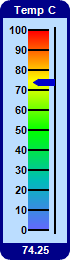
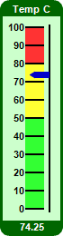
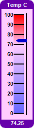
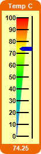
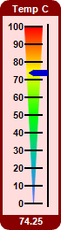
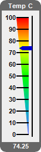

This example demonstrates horizontal linear meters in various colors, with different color scales, and with title and value readout.
BaseMeter.addColorScale is used to create the color scales in the meters. The color scales are created with various colors, end point positions and widths at the end points.
The title and value readout are created as
TextBox objects using
BaseChart.addTitle and
BaseChart.addTitle2, with the text box background set to the same color as that of the chart border.
The following is the command line version of the code in "cppdemo/colorvlinearmeter". The MFC version of the code is in "mfcdemo/mfcdemo". The Qt Widgets version of the code is in "qtdemo/qtdemo". The QML/Qt Quick version of the code is in "qmldemo/qmldemo".
#include "chartdir.h"
void createChart(int chartIndex, const char *filename)
{
// The value to display on the meter
double value = 74.25;
// The background and border colors of the meters
int bgColor[] = {0xbbddff, 0xccffcc, 0xffccff, 0xffffaa, 0xffdddd, 0xeeeeee};
const int bgColor_size = (int)(sizeof(bgColor)/sizeof(*bgColor));
int borderColor[] = {0x000088, 0x006600, 0x6600aa, 0xee6600, 0x880000, 0x666666};
const int borderColor_size = (int)(sizeof(borderColor)/sizeof(*borderColor));
// Create a LinearMeter object of size 70 x 260 pixels with a 3-pixel thick rounded frame
LinearMeter* m = new LinearMeter(70, 260, bgColor[chartIndex], borderColor[chartIndex]);
m->setRoundedFrame(Chart::Transparent);
m->setThickFrame(3);
// Set the scale region top-left corner at (28, 30), with size of 20 x 200 pixels. The scale
// labels are located on the left (default - implies vertical meter)
m->setMeter(28, 30, 20, 200);
// Set meter scale from 0 - 100, with a tick every 10 units
m->setScale(0, 100, 10);
// Demostrate different types of color scales and putting them at different positions
double smoothColorScale[] = {0, 0x6666ff, 25, 0x00bbbb, 50, 0x00ff00, 75, 0xffff00, 100,
0xff0000};
const int smoothColorScale_size = (int)(sizeof(smoothColorScale)/sizeof(*smoothColorScale));
double stepColorScale[] = {0, 0x33ff33, 50, 0xffff33, 80, 0xff3333, 100};
const int stepColorScale_size = (int)(sizeof(stepColorScale)/sizeof(*stepColorScale));
double highLowColorScale[] = {0, 0x6666ff, 70, Chart::Transparent, 100, 0xff0000};
const int highLowColorScale_size = (int)(sizeof(highLowColorScale)/sizeof(*highLowColorScale));
if (chartIndex == 0) {
// Add the smooth color scale at the default position
m->addColorScale(DoubleArray(smoothColorScale, smoothColorScale_size));
} else if (chartIndex == 1) {
// Add the step color scale at the default position
m->addColorScale(DoubleArray(stepColorScale, stepColorScale_size));
} else if (chartIndex == 2) {
// Add the high low scale at the default position
m->addColorScale(DoubleArray(highLowColorScale, highLowColorScale_size));
} else if (chartIndex == 3) {
// Add the smooth color scale starting at x = 28 (left of scale) with zero width and ending
// at x = 28 with 20 pixels width
m->addColorScale(DoubleArray(smoothColorScale, smoothColorScale_size), 28, 0, 28, 20);
} else if (chartIndex == 4) {
// Add the smooth color scale starting at x = 38 (center of scale) with zero width and
// ending at x = 28 with 20 pixels width
m->addColorScale(DoubleArray(smoothColorScale, smoothColorScale_size), 38, 0, 28, 20);
} else {
// Add the smooth color scale starting at x = 48 (right of scale) with zero width and ending
// at x = 28 with 20 pixels width
m->addColorScale(DoubleArray(smoothColorScale, smoothColorScale_size), 48, 0, 28, 20);
}
// Add a blue (0x0000cc) pointer at the specified value
m->addPointer(value, 0x0000cc);
// Add a title using white (0xffffff) 8pt Arial Bold font with a border color background
m->addTitle("Temp C", "Arial Bold", 8, 0xffffff)->setBackground(borderColor[chartIndex]);
// Add a bottom title using white (0xffffff) 8pt Arial Bold font with a border color background
// to display the value
m->addTitle(Chart::Bottom, m->formatValue(value, "2"), "Arial Bold", 8, 0xffffff
)->setBackground(borderColor[chartIndex]);
// Output the chart
m->makeChart(filename);
//free up resources
delete m;
}
int main(int argc, char *argv[])
{
createChart(0, "colorvlinearmeter0.png");
createChart(1, "colorvlinearmeter1.png");
createChart(2, "colorvlinearmeter2.png");
createChart(3, "colorvlinearmeter3.png");
createChart(4, "colorvlinearmeter4.png");
createChart(5, "colorvlinearmeter5.png");
return 0;
}
© 2023 Advanced Software Engineering Limited. All rights reserved.